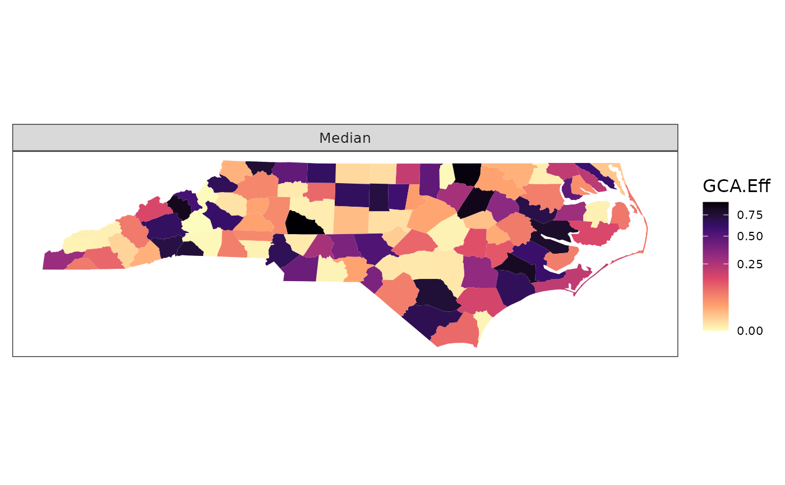
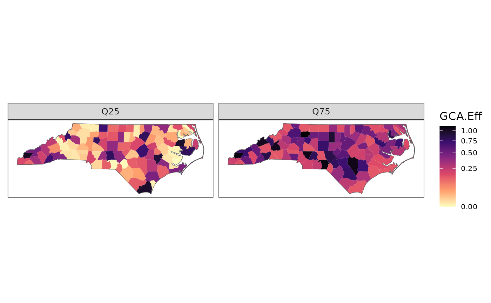
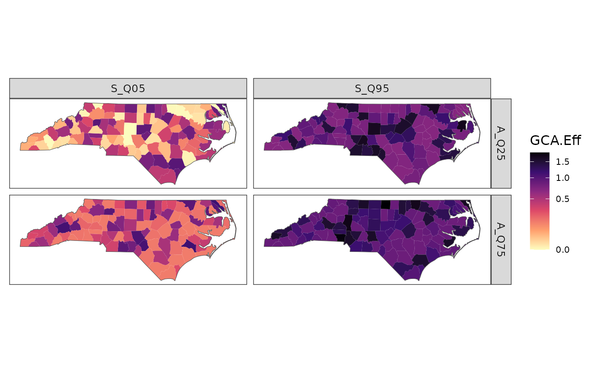

Plot response data
Arguments
- df
output from resp_quantiles.
- region_boundary
"sf" data.frame mapping features to a "geometry" column. Used to color map regions.
- group_boundary
"sf" data.frame containing a "geometry" column. Used to draw outlines around groups of regions.
- assay_quantiles
named numeric vector of assay quantile labels.
- summary_quantiles
named numeric vector of summary quantile labels.
Examples
# Use example boundary data from package
region_boundary <- geo_tox_data$boundaries$county
group_boundary <- geo_tox_data$boundaries$state
n <- nrow(region_boundary)
# Single assay quantile
df <- data.frame(id = region_boundary$FIPS,
metric = "GCA.Eff",
assay_quantile = 0.5,
value = runif(n)^3)
# Default plot
plot_resp(df, region_boundary)

# Add group boundary, a state border in this case
plot_resp(df, region_boundary, group_boundary)
# Change quantile label
plot_resp(df, region_boundary, group_boundary,
assay_quantiles = c("Q50" = 0.5))
# Multiple assay quantiles
df <- data.frame(id = rep(region_boundary$FIPS, 2),
metric = "GCA.Eff",
assay_quantile = rep(c(0.25, 0.75), each = n),
value = c(runif(n)^3, runif(n)^3 + 0.15))
plot_resp(df, region_boundary, group_boundary,
assay_quantiles = c("Q25" = 0.25, "Q75" = 0.75))

# Summary quantiles
df <- data.frame(id = rep(region_boundary$FIPS, 4),
assay_quantile = rep(rep(c(0.25, 0.75), each = n), 2),
summary_quantile = rep(c(0.05, 0.95), each = n * 2),
metric = "GCA.Eff",
value = c(runif(n)^3, runif(n)^3 + 0.15,
runif(n)^3 + 0.7, runif(n)^3 + 0.85))
plot_resp(df, region_boundary, group_boundary,
assay_quantiles = c("A_Q25" = 0.25, "A_Q75" = 0.75),
summary_quantiles = c("S_Q05" = 0.05, "S_Q95" = 0.95))
